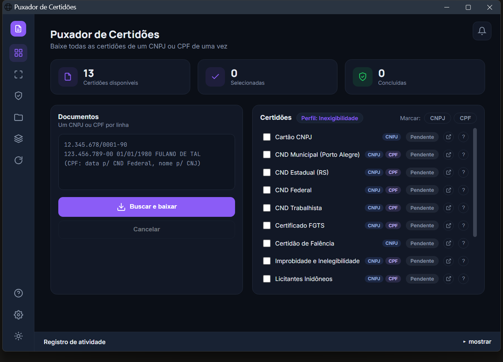
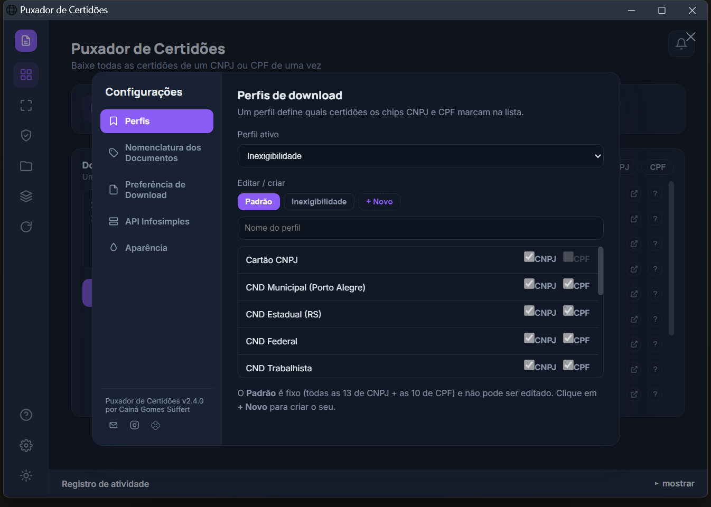
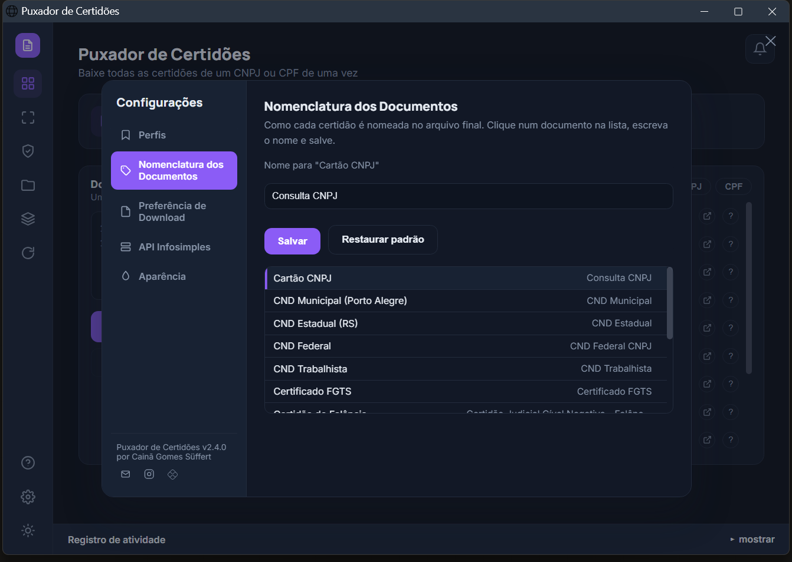
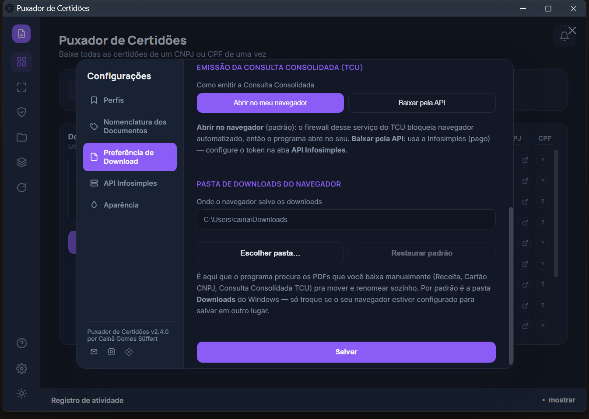
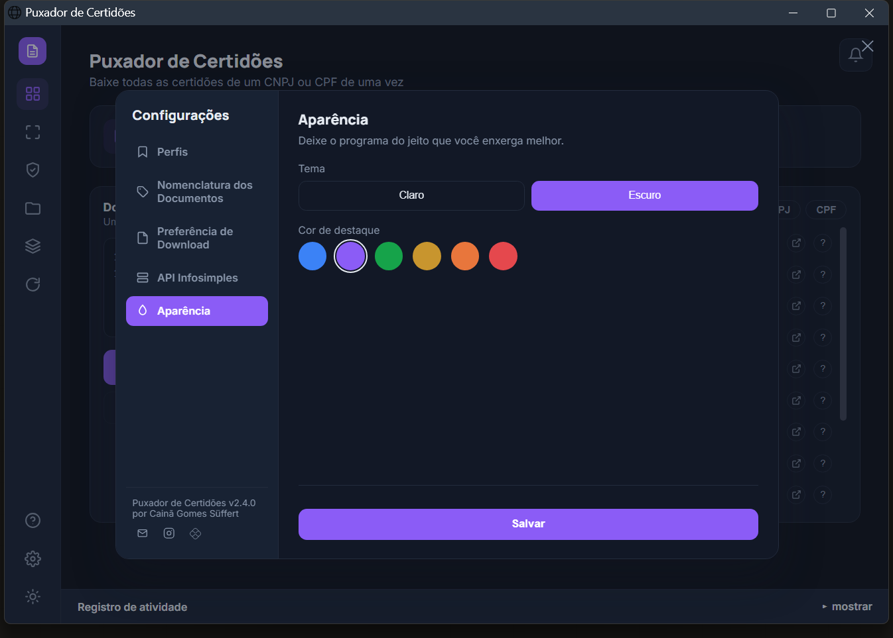

Baixe, de uma vez, todas as certidões de um ou mais CNPJ/CPF — já renomeadas e organizadas em pastas.
Baixar programa
Dê dois cliques no arquivo Puxador de Certidoes.exe. Se demorar, aguarde — não clique várias vezes.
No campo Documentos, escreva um por linha, com ou sem pontos/traços.
CPF logo abaixo de um CNPJ = sócio majoritário, vai pra mesma pasta. CPF pede data de nascimento na mesma linha. O programa já reconhece o CNPJ alfanumérico (com letras), regra do Governo Federal definida pela Instrução Normativa 2.229/2024.
Selecione certidões individualmente ou use os botões CNPJ/CPF para marcar todas de um tipo. ↗ abre o site oficial, ? explica a certidão.
O programa abre o site, você resolve o captcha e clica em emitir. Ele acha o arquivo, move e renomeia sozinho.
Ele baixa tudo automático primeiro, e só depois chama pras 4 manuais — resolva os captchas de uma vez, sentado.




13 certidões, sempre organizadas na mesma pasta por empresa/pessoa. Quatro são específicas de Porto Alegre / Rio Grande do Sul.
| Certidão | Órgão | CNPJ | CPF | Abrangência |
|---|---|---|---|---|
| Cartão CNPJ | Receita Federal | ✅ | — | Nacional |
| CND Municipal | Prefeitura de Porto Alegre | ✅ | ✅ | ⚠️ Somente POA |
| CND Estadual | SEFAZ-RS | ✅ | ✅ | ⚠️ Somente RS |
| CND Federal | Receita Federal / PGFN | ✅ | ✅ | Nacional |
| CND Trabalhista | TST (CNDT) | ✅ | ✅ | Nacional |
| Certificado FGTS | Caixa (CRF) | ✅ | ✅ | Nacional |
| Certidão de Falência | TJRS | ✅ | — | ⚠️ Somente RS |
| Improbidade e Inelegibilidade | CNJ | ✅ | ✅ | Nacional |
| Licitantes Inidôneos | TCU | ✅ | ✅ | Nacional |
| Contas Julgadas Irregulares | TCU | ✅ | ✅ | Nacional |
| Consulta CEIS | CGU | ✅ | ✅ | Nacional |
| Consulta Consolidada | TCU | ✅ | — | Nacional |
| Comprovante ISSQN | Prefeitura de Porto Alegre | ✅ | ✅ | ⚠️ Somente POA |
Sim, principalmente na primeira vez do dia. Não clique várias vezes.
Não. O programa sempre usa uma janela do Edge (que já vem no Windows), independente do seu navegador do dia a dia.
É uma certidão que exige você resolver o captcha. O programa já abriu o site: resolva o "não sou um robô", clique em emitir/baixar, e ele organiza o arquivo sozinho.
Alguns sites do governo ficam mais "desconfiados" em redes com proxy ou bloqueios (comum em rede corporativa). É só resolver na janela que o programa abriu.
Não precisa. Pode digitar só os números, ou com pontos e traço — tanto faz. Também entende CNPJs alfanuméricos.
Não. Cada certidão é independente — as que deram certo ficam baixadas normalmente. Você pode tentar de novo só a que falhou.
Puxador de Certidões · caina@outlook.com · Instagram · Pix